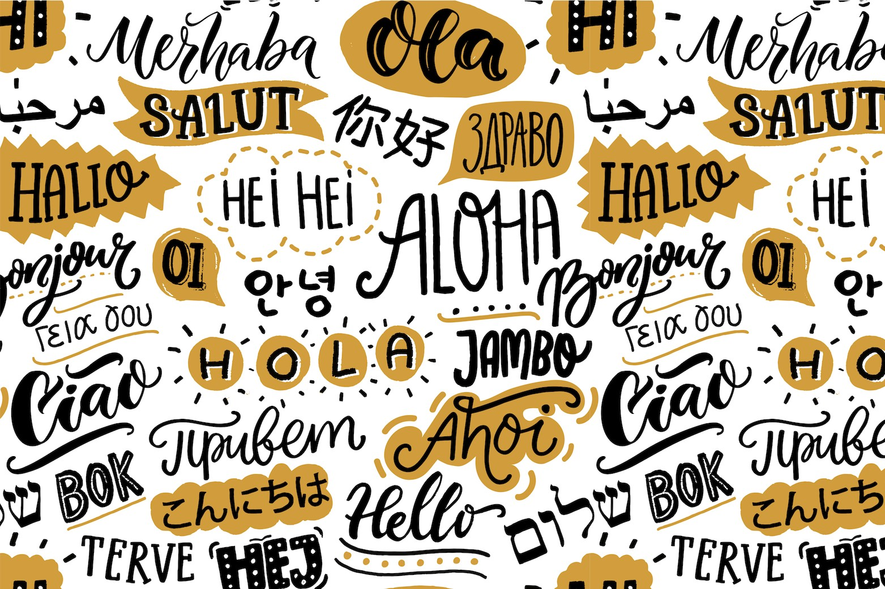

Консультації з математики
Індивідуальна підготовка до ЗНО, розбір домашніх завдань, пояснення складних тем.
300 грн/год
Індивідуальна підготовка до ЗНО, розбір домашніх завдань, пояснення складних тем.
300 грн/год
Індивідуальні заняття з вивчення історичних періодів, підготовка до ЗНО та ДПА, робота з історичними джерелами та картами. Допомога у написанні есе та виконанні практичних завдань.

280 грн/год
Граматика, лексика, підготовка до міжнародних іспитів (IELTS, TOEFL, PTE).
350 грн/год
Також проводимо заняття з фізики, хімії, біології, історії України, географії, зарубіжної літератури, інформатики та інших предметів шкільної програми. Заняття проводять кваліфіковані викладачі з індивідуальним підходом до кожного учня.
від 250 грн/год
Комплексна підготовка до державної підсумкової атестації з основних предметів: математика, українська мова, історія. Матеріали відповідають чинній програмі.
270 грн/год
Допомога у вивченні алгоритмів, мов програмування (Python, Java, C#, JavaScript), а також основ комп’ютерної грамотності.

370 грн/год
Допомога з домашніми завданнями, розвиток навичок читання, письма та рахунку. Робота у формі гри та з індивідуальним підходом.
300 грн/год
Вивчення англійської, німецької, іспанської, або французької мови з нуля або для підвищення рівня.
400 грн/год